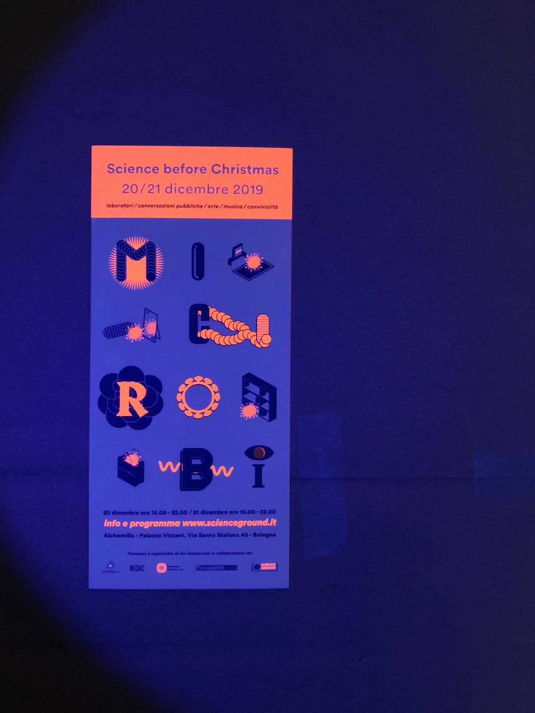
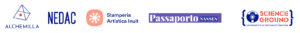

{#8} Science before Christmas: programma

«Ma senza che gli altri non ne sappiano niente dimmi senza un programma dimmi come ci si sente»
Fabrizio De André, Verranno a chiederti del nostro amore
Cari festanti,
lo scorso 13 Dicembre, mentre la città dormiva, Santa Lucia si aggirava per i portici di Bologna ad attacchinare delle misteriose locandine fluorescenti…
Data la curiosità di tanti, è giunta l’ora di svelare il programma di Science Before Christmas! Oltre alle attività segnalate, altre saranno lasciate alla libera improvvisazione di ExTemporanea e ai tanti cavalieri che vorranno unirsi alla nostra tavola periodica.
Vi aspettiamo il 20 e 21 Dicembre presso la sede dell’Associazione Alchemilla, palazzo Vizzani, Via Santo Stefano 43. Ingresso a offerta libera.
Attività permanenti
Materia che computa
ExTemporanea
Per comprendere la computazione non servono i transistor: i primi calcolatori erano oggetti meccanici molto semplici. I materiali e volontari di ET sono sempre a disposizione e disponibili per fare un ragionamento e raccontare una storia.
Microbes Ensemble
Cinzia Delnevo
Disegno collettivo di colonie cellulari in accrescimento. Il loro statuto è incerto, interseca regni e domini sovvertendo i sistemi classificatori e nutrendo le fantasie umane.
Fanzine
ExTemporanea con Franco
Le rotative della Risograph della tipografia artistica Inuit stanno stampando a ciclo continuo 32 pagine di scienza e arte, che verranno servite ancora calde all’incontro conclusivo di sabato. Nel frattempo, negli insterstizi di tempo iniziamo a pensare (e forse già a impaginare?) un futuro numero…
Video-proiezioni
Video d’arte in esplorazione del confine tra uomo e altri esseri viventi, uomo e ambiente.
- Industrial Bay di Giuseppe Petruzzellis
- Stranger di Christian Reiner e Karin Andersen
- Reservoir di Karin Andersen
- Fizer di Saggion-Paganello
- Genesis di Ameleto Cascio
Venerdì 20 Dicembre
Come costruire un computer con lego, biglie e domino
15.00 – 16.30. Laboratorio 10 -116 anni
Il bit è il più piccolo pezzo di informazione. Quando scriviamo un messaggio su WhatsApp, o scattiamo una foto con lo smartphone, non stiamo facendo altro che modificare un certo numero di bit secondo una successione di calcoli. Concetti un po’ astratti: in pratica, di cosa è fatto il bit? E cosa vuol dire ‘lanciare un programma’? In questo laboratorio impareremo a costruire il più semplice dei calcolatori usando il lego, lanciando biglie, e costruendo piste domino come fossero programmi informatici, per iniziare a capire che cosa succede nel cuore dei nostri smartphone.
Macchine che imparano a giocare
15.00 – 16.30. Laboratorio 10 -116 anni
Pare che i computer diventeranno più intelligenti degli uomini: già apprendono a giocare a scacchi meglio dei loro maestri. Ma come funziona veramente l’intelligenza artificiale? In questo laboratorio, armati di scatole, vasetti, e altro materiale di risulta costruiremo una macchina che impara a vincere ad un semplice gioco di strategia.
Abracadabra
15.00 – 17.00. Gruppi spontanei
Dopo dati e microbi, quale sarà la parola magica che schiuderà le porte di Scienceground 1.6666…? Getta la tua proposta nel calderone, tra oloturie e transaminasi, tachioni e metabolomi: siamo pronti a discuterla!
La salute ai tempi del cambiamento climatico
17.00 – 18.00. Conversazione
Con Chiara Bodini e Chiara Di Girolamo
«“Salute” è un costrutto polisemico, sfugge a qualsiasi definizione univoca: l’antropologia medica ne mette in luce l’irriducibilità a una mera alterazione biologica, oggettivamente misurabile (disease), alla percezione che di essa ha l’individuo (illness), e al modo in cui essa viene socializzata in un insieme di narrazioni, etichette, pratiche e relazioni di potere (sickness).» Così viene problematizzato il concetto di salute nell’introduzione di Un nuovo mo(n)do di fare salute, un volume che partendo dall’analisi critica dei sistemi sanitari porta avanti le proposte costruttive della Rete Sostenibilità e Salute. Ne parliamo con Chiara Bodini, co-curatrice del volume e ricercatrice del Centro di Salute Internazionale e Interculturale, e Chiara Di Girolamo, medico di salute pubblica.
Culturismi: primo round
18.00 – 20.00. Tavola periodica
A cura di Passaporto Nansen, con Mimmo Cangiano, Lucia Faienza, Luca Pareschi
Sul fronte letterario: sempre più festival, eventi promozionali, presentazioni, campagne, fiere. Sul fronte scientifico: sempre più congressi, riviste, editoriali, corsi di soft skills. Iniziative spesso orientate alla promozione dei libri / degli articoli scientifici, quanto piuttosto verso la loro effettiva lettura ed elaborazione. Funzionano? E se no, come incidono sulla qualità del dibattito culturale / della ricerca scientifica? Possono essere migliorate? In questo incontro vogliamo intavolare una discussione, il più possibile costruttiva e contaminata, cercando di interrogarci (e interrogare i partecipanti) sui futuri possibili del fare cultura / fare scienza, e soprattutto sulla diffusione e promozione della lettura.
The word is now a virus – Studio I
20.30 – 21.30. Sound performance
A cura di Mauro Martinuz, Elisa Campagnaro, Ex-Temporanea
In quale modo la riflessione di uno scienziato può entrare in relazione con le storie e i miti contemporanei, la narrazione scientifica confrontarsi con l’immaginazione? Un work in progress che tramite l’interazione tra tecnologia, ambiente e voce interroga la scienza tramite la letteratura.
Sabato 21 Dicembre
Abracadabra
09.00 – 18.00. Gruppi spontanei
(v. sopra)
Come fare una rivoluzione scientifica: manuale cubano
11.00 – 12.00. Conversazione
Con Angelo Baracca
Già nei suoi primi discorsi dopo il rovesciamento di Batista, Fidel Castro legava la tenuta della rivoluzione all’alfabetizzazione e alla ricerca scientifica. Nonostante decenni di embargo e isolamento, Cuba è oggi all’avanguardia nel campo medico e nelle biotecnologiche, anche a confronto delle grandi potenze occidentali. Che relazioni ci sono dunque tra successo scientifico e ricchezza economica? E che tipo di ricerca si fa in un contesto sociale ispirato al marxismo? Ne parliamo con Angelo Baracca, fisico, autore di Cuba: medicina scienza e rivoluzione.
Culturismi: secondo round
12.00 – 13.30. Tavola periodica
A cura di Passaporto Nansen, con Alessandro della Casa e Ton Vilalta (segreteria Festivaletteratura), Luca Pareschi, Federico Casotto (autore Doppiozero)
Ventitrè anni fa nasceva il Festivaletteratura di Mantova, tra i primi grandi festival letterari italiani. Da allora rassegne analoghe, a volte ispirate dalla kermesse mantovana, sono fiorite in ogni anfratto d’Italia, e c’è chi, come Goffredo Fofi nel suo pamphlet L’oppio del popolo, punta il dito sull’industrializzazione della cultura. Stimolata dalle sue dure parole ExTemporanea, che a Festivaletteratura propone Scienceground, ha affidato alle pagine di Passaporto Nansen qualche considerazione sullo statuto dei festival. Se la festa è il momento finale di un percorso lungo e faticoso (come la sagra stava al raccolto), qual è il percorso di cui i festival sono il momento finale? Esiste un’intercapedine in cui i festival possono agire da mediatori sociali tra i cittadini e le altre istituzioni? Quali aspetti spirituali/comunitari sono tutelati dai festival? Ne parliamo con alcuni membri della segreteria organizzatrice di Festivaletteratura.
Macchine che imparano a giocare
15.00 – 16.30. Laboratorio 10 -116 anni
(v. sopra)
Come costruire un computer con lego, biglie e domino
15.00 – 16.30. Laboratorio 10 -116 anni
(v. sopra)
Paywall: The Business of Scholarship
15.00 – 16.30. Proiezione
Paywall: The Business of Scholarship is a documentary which focuses on the need for open access to research and science. The film questions the rationale behind the $25.2 billion a year that flows into for-profit academic publishers, examines the 35-40% profit margin associated with the top academic publisher, Elsevier, and looks at how that profit margin is often greater than some of the most profitable tech companies such as Apple, Facebook, and Google. More at https://paywallthemovie.com/.
Presentazione di un progetto di ricerca e creazione sull’inudibile
15.30 – 16.00
Daniela Cattivelli
Scienza e arte: quale incontro?
16.00 – 18.00. Tavola periodica
Con Associazione Alchemilla, Karin Andersen, Leone Contini, Saggion-Paganello, Giuseppe Petruzzellis
Secondo Salvador Dalì: «L’arte è fatta per disturbare, la scienza per rassicurare».
Per lo scienziato questa stessa frase è disturbante: a partire dal confronto con dati e analisi che non tornano, per arrivare alla prospettiva di una vita nomade nel mondo del precariato universitario, nella sua pratica quotidiana non c’è molto di rassicurante. Salvo forse la speranza-promessa di trovare qualcosa di “vero” all’interno di un mondo caotico, a cui lo scienziato anela mettendo in opera pratiche che a un occhio esterno potrebbero apparire assurde, maniacali, e che risuonano con il lavoro di catalogazione e interpretazione di pietre e sassi di Luigi Lineri immortalato nel documentario The Quest di Giuseppe Petruzzellis. Eppure nella pubblicistica il messaggio scientifico viene utilizzato come un dispositivo che conforta abitudini e fantasie che poco hanno a che fare con la ricerca, come espone il video Fizer di Saggion-Paganello.
Viceversa, potremmo ribaltare la frase Dalì: «La scienza è fatta per indagare, l’arte per descrivere». Eppure da un lato lo spazio per la curiosità nella vita di uno scienziato è molto ridotto, come ci ha raccontato Scott Gilbert in una recente intervista, e sta ad artisti come Karin Andersen immaginare nuove creature, come in Naughty Messy Portraits dove immagina nuove contaminazioni con batteri e muffe. Dall’altro artisti come Leone Contini indagano il reale usando gli strumenti di discipline accademiche, come in ToscoCina, una serie concatenata di azioni che interrogano la relazione tra biodiversità e migrazioni, tra etnologia e botanica.
“Dal micro al macro: un percorso ecologico”
18.00 – 18.30. Introduzione…
Paulo Fernando Lévano
«So goodbye yellow brick road
Where the dogs of society howl
You can’t plant me in your penthouse
I’m going back to my plough»
Scientismi. Ripensare la conversazione scientifica
18.30 – 19.00. Tavola periodica
Con chi c’è c’è
Cari amici, nuovi e vecchi, ma anche giovani e ahimè soprattutto poveri, è quasi arrivato il momento del panettone o del pandoro. Ma prima della fine di questa cerimonia di sposalizio tra arti e scienze, scambiamoci gli ultimi voti di commiato, impressioni su quel che è stato e ancor meglio, idee su quel che sarà! Questi microbi di ExTemporanea sono assai resistenti agli antibiotici che vorrebbero liquidarli impietosamente, e ansiosi di trovare una nuova configurazione più efficace ancora per infestare l’edizione 1.66666… di Scienceground. Vi aspettiamo per un ultimo momento di contaminazione con ospiti a sorpresa (siamo i primi a non saperne nulla!) e magari un po’ di dolce…
